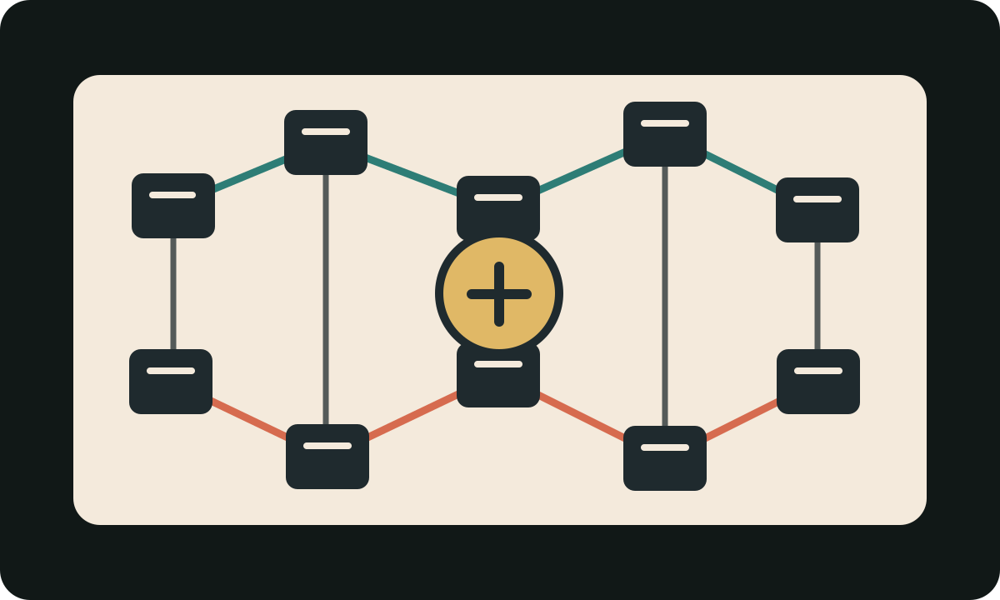
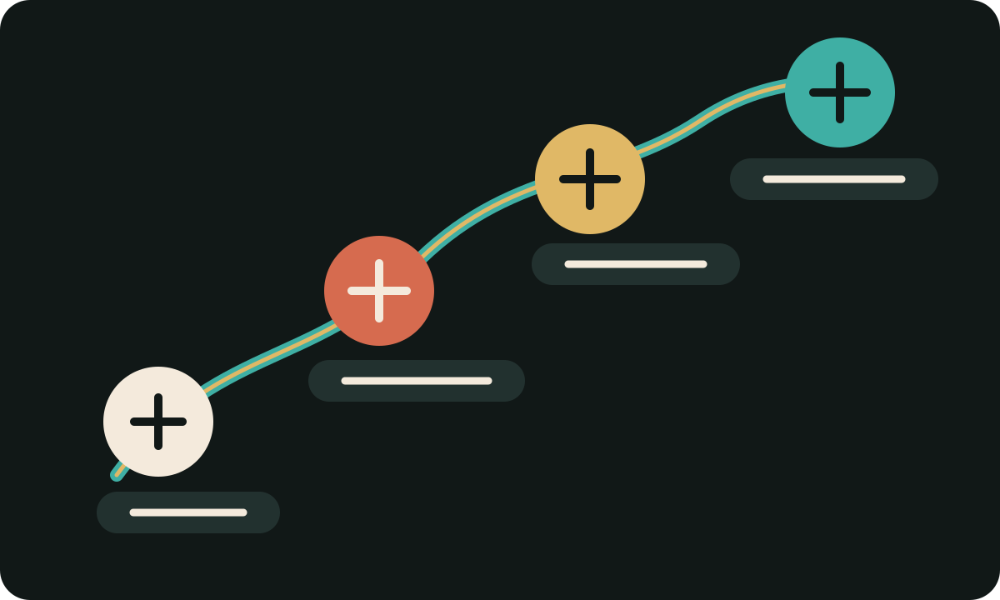

Curriculum and industry
The Curriculum-to-Industry Gap
CS coursework still builds foundations, but professional software engineering often asks students to reason through large, inherited, long-running systems that short assignments rarely simulate.
In my interview with Justin Jia, he raised an important point that often gets overlooked when discussing AI in the context of software engineering and computer science: these two things are related, but not the same thing. In reflecting on his time as a UC Davis undergraduate, he applauded the CS curriculum for laying down the foundational knowledge he carries with himself today, saying it was "pretty comprehensive" because it gave him the principal knowledge of how a computer system works, from hardware-level concepts to programming languages, data structures, and operating systems (Jia, personal communication, 2026).
The foundations of computer science will always be relevant. In fact, they may become more important as AI becomes further entrenched into engineering workflows, because students need knowledge and reasoning skills in order to see through the weaknesses and errors AI tools will produce.
Jia also pointed out a weakness in the curriculum: common undergraduate projects do not fully prepare students for the scale, complexity, and intricacies of working as a professional software engineer. Small-team projects are not useless. They teach collaboration, planning, and the experience of building something from the ground up. The problem is that they often stop before students encounter the harder part of software engineering: maintaining, understanding, and safely changing systems they did not fully create themselves.
This becomes even more important in an AI-heavy workflow because AI tools are usually strongest when the task is small, isolated, and clearly scoped. Professional software engineering is rarely that clean. A generated solution can look correct in one file while quietly breaking assumptions elsewhere in the system. That is why students need practice understanding context, dependencies, and design choices before accepting what AI gives them.

AI is not making foundations irrelevant. It is making the ability to use those foundations as judgment more important.
Smith (2024) helps explain why universities are in a difficult position: AI can be treated as a tool students use across classes, a subdomain students study directly, or a disruption that changes how assignments and assessments work. If AI remains an unclear wildcard in the curriculum, students may continue to feel a gap between what employers increasingly expect and what universities explicitly prepare them to do.
